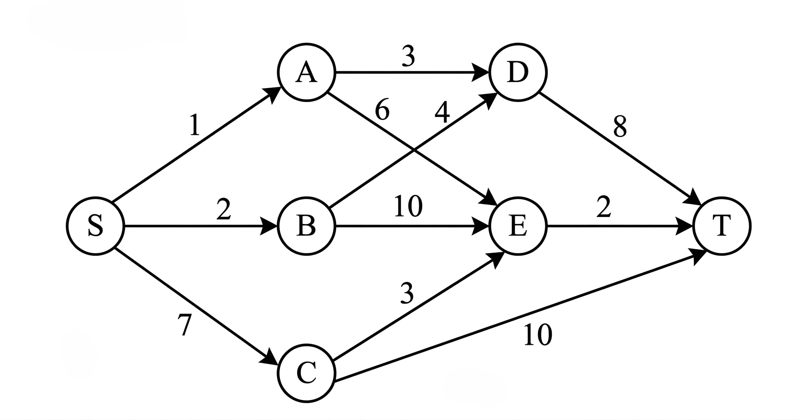
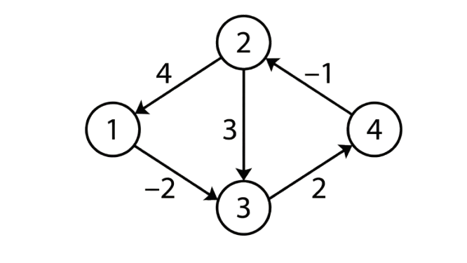

B.Tech., IV Semester
Examination, December 2024
Grading System (GS)
Max Marks: 70 | Time: 3 Hours
Note:
i) Attempt any five questions.
ii) All questions carry equal marks.
a) Give the asymptotic bounds for the equation $f(n) = 2n^2 - 4n + 20$ and represent it in terms of $\theta$ notation. (Unit 1)
b) Define Quicksort? Sort the elements 22, 12, 30, 46, 28, 14, 8, 10, 56, 18, 3 using Merge sort. (Unit 1)
a) Write an algorithm to find the matrix multiplication using Strassen's method. (Unit 1)
b) Construct a Huffman coding for the given data? Write the applications of huffman coding.
| Character | a | b | c | d | e | f |
|---|---|---|---|---|---|---|
| Frequency | 3 | 8 | 15 | 22 | 33 | 46 |
(Unit 2)
Solve the following problem of job sequencing with deadlines using the Greedy method. $n = 5$ with profits $(p_1, p_2, p_3, p_4, p_5) = (5, 20, 10, 15, 1)$ and deadlines $(d_1, d_2, d_3, d_4, d_5) = (3, 2, 1, 2, 3)$. (Unit 2)
a) Solve the following 0/1 Knapsack problem using dynamic programming where $n = 4, m = 40, (w_1, w_2, w_3, w_4) = (2, 11, 22, 15)$ and $(p_1, p_2, p_3, p_4) = (11, 21, 31, 33)$. (Unit 3)
b) Construct a multistage graph for the given graph using the Greedy method.

(Unit 2)
a) Explain the Floyd Warshall algorithm for the given graph.

(Unit 3)
b) Explain in detail about the FIFO branch and bound. (Unit 4)
a) Write an algorithm for the 8-queens problem using backtracking. (Unit 4)
b) Draw the state space tree for 'm' coloring when $n=3$ and $m=3$. (Unit 4)
a) Use the function OBST to compute $w(i, j), r(i, j)$ and $c(i, j)$, $0 \le i < j \le 4$ for the identifier set $(a_1, a_2, a_3, a_4) =$ (double, int, for, if) with $p(1:4) = (3, 3, 1, 1)$ and $q(0:4) = (2, 3, 1, 1)$. Using $r(i,j)$'s construct the optimal binary search tree. (Unit 5)
b) Explain in detail Height balanced tree with an example. (Unit 5)
Write short notes on any two of the following.
a) Binary search algorithm and its time complexity. (Unit 1)
b) Single source shortest path algorithm. (Unit 2)
c) Hamiltonian graph and cycle. (Unit 4)
d) Breadth First Search. (Unit 5)